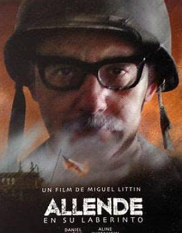

Beacon in the dark
--星点微光，也能照亮行路--
切·格瓦拉
古巴革命领导人
阿根廷马克思主义革命家、医师、作家、游击队队长、军事理论家、国际政治家及古巴革命战争的核心人物
切·格瓦拉是古巴共产党、古巴共和国和古巴革命武装力量的主要缔造者和领导人之一。
1955年，格瓦拉在墨西哥迅速加入了卡斯特罗组织的名为“七二六运动”的军事组织并展开斗争。
1956年和卡斯特罗一起组建游击队，到12月27日，革命军拥有了8000平方公里土地和50万人民。
1959年战争结束后，古巴新政府成立，格瓦拉被授予“古巴公民”的身份。
1959年10月，格瓦拉被任命为国家银行总裁，开始对古巴经济体系进行社会主义改造，将企业收归国有，并实行了土地改革。
1961年，格瓦拉被任命为工业部长。
1962年格瓦拉代表古巴赴莫斯科谈判，并最终签署了苏联在古巴部署核武器的计划。
1962年创作具有影响深远的游击战指南。
1965年离开古巴，先后前往刚果（金）及玻利维亚试图点燃革命火种。
1966年至1967年间 ，格瓦拉开始在玻利维亚带领游击队员进行革命活动。
1967年在玻利维亚被捕，继而被杀。
切·格瓦拉死后，切·格瓦拉的肖像已成为反主流文化的普遍象征、全球流行文化的标志
同时也是第三世界共产革命运动中的英雄和西方左翼运动的象征。
《时代周刊》杂志将格瓦拉选入二十世纪百大影响力人物。
古巴共和国、古巴共产党和古巴革命武装力量的主要缔造者，被誉为“古巴国父”，是古巴第一任最高领导人。
1945年，考入哈瓦那大学法律系后，积极投身于反对亲美独裁政权的爱国学生运动。
1947年，卡斯特罗逐渐对古巴社会不公表示不满，并加入了一个由查巴斯（Eduardo Chibas）成立的政党，即古巴共产党的前身人民党。
1953年7月26日，卡斯特罗率134名爱国青年攻打圣地亚哥的蒙卡达兵营，旨在夺取武器，在全国掀起反对巴蒂斯塔独裁政权武装斗争，即揭开了古巴武装斗争的序幕。由于双方力量悬殊，起义失败，大部分青年起义者惨遭杀害。卡斯特罗兄弟等人幸免于死，被捕入狱。在法庭上，发表著名的自我辩护词《历史将宣判我无罪》（La Historia me Absolverá）。
1955年5月，巴蒂斯塔为自己“竞选”总统笼络人心，大赦政治犯，卡斯特罗及其战友意外获释。出狱后立刻着手组织革命组织“七·二六运动”，并赴墨西哥组织秘密武装。
1956年，卡斯特罗回到古巴，再次发动武装起义，在马埃斯特腊山区创建了起义军的革命根据地，开展游击战争。
1959年1月，卡斯特罗出率领起义军推翻了巴蒂斯塔独裁政权，成立了革命政府。
1959年2月16日，卡斯特罗出任政府总理（后改为部长会议主席）和武装部队总司令。
1965年，该党改名为古巴共产党，卡斯特罗任中央委员会第一书记。
2011年4月．卡斯特罗正式表示不再担任古巴共产党的领导职务。
2016年11月25日，古巴革命领袖菲德尔·卡斯特罗去世，享年90岁,骨灰被安葬在圣伊菲赫尼亚公墓。
据古巴安全部门统计，卡斯特罗被计划暗杀达638次之多，居各国领袖之首。卡斯特罗则幽默地说：“今天我还活着，这完全是由于美国中情局的过错。”
智利医生、政治家、总统、理想者
阿连德在总统任内实行国有化政策和土地改革、积极发展教育事业，外交方面加强智利同第三世界国家的联系和团结，与中国建交，执政后期智利国内经济形势恶化，政局动荡。
萨尔瓦多·阿连德是阿连德社会主义理论的缔造者和实践者，在后世被广泛的纪念。
阿连德热衷于马克思主义，公开批评资本主义，致力于社会主义改革。美国在智利拥有实质性的经济利益，一旦社会主义者执政，一些美国的大公司就有可能被智利政府国有化或没收。美国担心智利会成为社会主义国家，加入苏联的社会主义阵营，因此阿连德在美国政府中不受欢迎。
阿连德坚定社会主义政策和与古巴的亲密联系使美国政府忧心忡忡。尼克松政府通过多边组织向智利施加经济压力，继续支持阿连德在国会中的反对派。阿连德当选后，尼克松随即指示中央情报局和国务院对阿连德政府“施加压力”。
1973年9月11日，总统阿连德于总统府被叛军围攻，面对炮火他没有打算投降，对着漫天炮火发表最后一次演讲，感谢了所有民众，为民众寄予希望，并让自己的卫队放下武器投降离开
最终，阿连德拿起卡斯特罗赠与的AK47开枪自杀。
他死后，叛军对智利进行了血腥的清洗，智利走向了一段黑暗时期
------------------------------圣地亚哥在下雨，马孔多别为我哭泣-------------------------------

菲德尔·卡斯特罗
古巴第一任最高领导人
萨尔瓦多·阿连德·戈森斯
智利前总统
他们应该被铭记